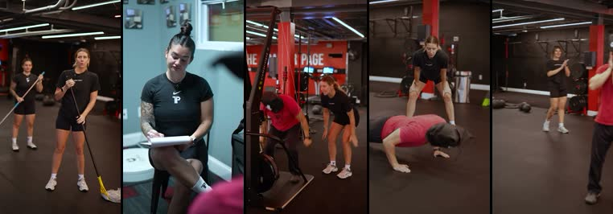

01
賊仔打劫，打完第一堂
點解揀呢條：賊仔衝入嚟打劫，結果被教練帶完成堂試堂。觀眾笑住睇，其實已經睇完「第一堂會做乜」：填資料、綁手帶、打 pad。

參考片截圖（版權屬原作者）· 喺 Instagram 睇原片 ↗
秒畫面對白／字幕
0–2場景 E：賊仔戴黑布袋頭套，一手推開玻璃門衝入嚟賊：「打劫呀！啲錢全部交出嚟！」
2–5場景 A：兩個教練拖緊地，慢慢轉頭，好淡定教練 A：「我哋冇錢喎。」
5–6賊仔停一停，個頭側一側賊：「……咁你哋有咩？」
6–9硬切，場景 C：賊仔坐喺前台（頭套仲戴住），教練拎 clipboard 問問題字幕：試堂前：先了解你身體狀況
9–13特寫：教練幫佢綁手帶字幕：由綁手帶開始教
13–19場景 B：打 pad、踢沙包、做 burpee，最後成個人趴喺地教練 A：「仲有兩組！」
19–22場景 I：Dollar 店長行過，望住趴喺地嘅賊仔（冇對白，配一聲貓叫）
22–27臨演學員圍住佢拍手；白板寫「歡迎賊哥 第一堂完成 🥊」教練 B：「大家俾個掌聲賊哥！」
27–30賊仔除低頭套，一頭汗賊：「咁……聽日幾點？」
字幕：唔使打劫，留言「試堂」
字幕：唔使打劫，留言「試堂」
道具黑布袋頭套（眼位開窿，保持安全）、拖把 2 支、clipboard、白板
Caption：打劫打到變學員😂 喺 S Class，零基礎都有教練由綁手帶開始教你。留言「試堂」，我哋 DM 時間表俾你🥊